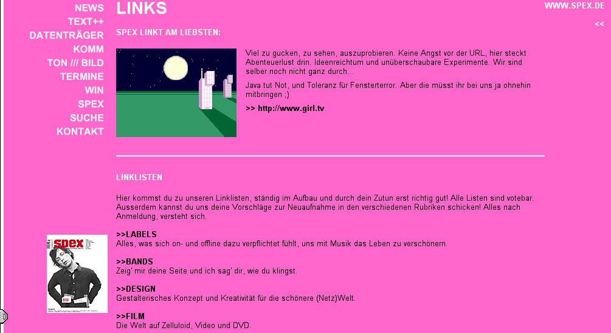

Spex linkt am liebsten:
kinder, was hab ich die spex-seite geliebt früher... klar, dass das so nicht weiter gehen konnte, auf ewig... aber naja, macromedia gibts halt auch nicht mehr, da sieht man mal - eine tolle website nutzt einem garnichts, am ende kauft einen doch nur adobe, dann hat man den salat, von den 4 milliarden die man dann hat, kann man nicht mal eine ecke von nike kaufen... und ja, sowas ist doch dann schon richtig blöd irgendwie...